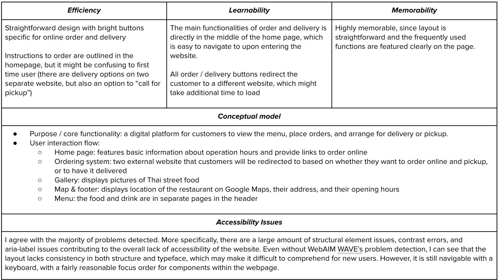
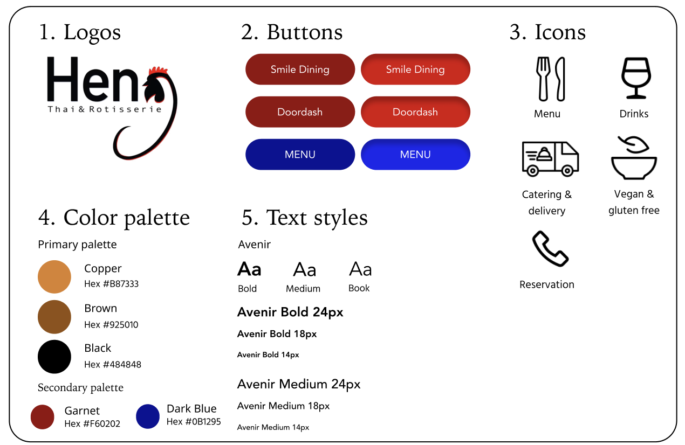
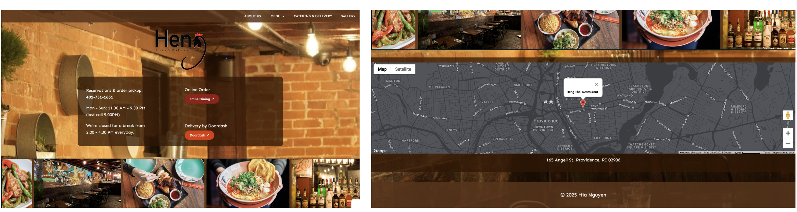

This case study focuses on redesigning an existing webpage to improve its usability, accessibility, and responsiveness. By analyzing the current interface and identifying key issues, I aim to create a more intuitive and visually appealing design that enhances the user experience across different screen sizes.
Webpage Rationale
I selected the website for Heng, a local restaurant I frequently visit. Given its small-scale operations, the website is fairly basic, focusing primarily on practical features like online ordering and delivery, with minimal interactive content.
The simplicity of the site makes it an ideal candidate for a redesign, as it allows for substantial enhancements that could greatly improve its appeal. There is significant room for improvement in terms of visual design, user experience, and overall functionality.
Usability Analysis

Visual Design Style Guide

Standardizing fonts and colors for consistency
Enhancing buttons and navigation for a more intuitive flow
Improving accessibility by addressing font and structural inconsistencies
In this redesigned version, I focused on improving responsiveness and accessibility through a series of thoughtful changes aimed at creating a more user-friendly experience, all while maintaining the original feel of the website. This includes implementing a responsive layout with flexbox for all screen sizes and maintaining consistency in color contrast and fonts throughout the pages.

Some additional design choices include a scrolling gallery of photos from the restaurant, improving the previous static display of generic food images. The ordering buttons features good contrast, and improves the learnability of the website by having icons representing external links.
I tested responsiveness and accessibility elements through changing screen sizes with the inspect tool and opening the website on different devices. WebAIM WAVE also indicates very few accessibility issues with this new webpage compared to the original one.